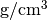

Here a short example of how to calculate the transport coefficients from analytical band generation is presented.
Start with the param.yml, bandparam.yml and
cellparam.yml located in the tests/1 directory.
Copy these files into an input directory in a directory where you want to execute T4ME.
Here follows a brief explanation of the general parameters
that need attention. They are already specified in the sample
param.yml file so the user should not have to change
this for a test run. All other parameters should at this
point not need to be touched.
transport_calc: True
Perform the calculation of the transport coefficients.
transport_method: "closed"
Utilize the Fermi-Dirac integrals form of the integrals.
transport_chempot_min: -0.4
The minimum chemical potential to sample, in eV.
transport_chempot_max: 0.4
The maximum chemical potential to sample, in eV.
transport_chempot_samples: 100
How many samples do you want between transport_chempot_min
and transport_chempot_max.
transport_use_analytic_scattering: True
Use parabolic and analytic models for the electron scattering.
temperature_min: 300
The minimum temperature in K.
temperature_max: 300
The maximum temperature in K.
temperature_steps: 1
The number of temperature steps between temperature_min
and temperature_max.
read: param
Read and generate electronic structure from the file
bandparam.yml.
Here follows a brief explanation of the band parameters
that need attention. They are already specified in the
sample bandparam.yml file so the user should not have to
change this for a test run. All other parameters should at this
point not need to be touched.
Band 1:
Only generate one band.
type: 0
Use parabolic band generation.
effmass: [-1.0,-1.0,-1.0]
Effective mass in units of the free electron mass. For parabolic bands, this needs to be equal along each direction. Negative mass gives bands that curve downwards.
e0: 0.0
The energy shift in eV.
status: v
A valence band.
select_scattering: [1,0,0,0,0,0,0,0,0,0,0,0]
Acoustic phonon scattering is selected.
d_a: 1
Deformation potential in units of eV.
speed_sound: 10000
Speed of sound in units of m/s.
rho: 10
The density of the material in units of .
Here follows a brief explanation of the cell parameters
that need attention. They are already specified in the
sample cellparam.yml file so the user should not have
to change this for a test run. All other parameters should at
this point not need to be touched.
This data is mainly used to set up the symmetry of the Brillouin zone, the k-point mesh and the mapping between the irreducible and full Brillouin zone.
a: [5.0,0.0,0.0]
b: [0.0,5.0,0.0]
c: [0.0,0.0,5.0]
The vectors determining the unit cell. Units in AA.
pos: [[0.0,0.0,0.0]]
Put one atom at zero.
atomtypes: [X]
Of type X.
ksampling: [11,11,11]
Request a k-point sampling in the full Brillouin zone of 11 points along each reciprocal unit cell vector.
If one uses the Fermi-Dirac integrals, i.e. setting
transport_method: "closed"
or
transport_method: "numeric"
the entries in this file is of no importance. However, as soon as
transport_method: "numerick"
the entries matter, for the symmetry, k-point grid layout, volume scaling factors etc.
After all parameters have been set (should only be necessary to copy files as stated before) the transport coefficients can be calculated by executing
python t4me.py
During execution the file info.log in the
directory output can be inspected in order to assess
progress and that everything works as expected.
On completion the transport coefficients can be found in the output directory.
Here a short example of how to calculate the transport coefficients from a VASP output file (typically vasprun.xml) is presented.
Start with the param.yml,
bandparam.yml located in the tests/13 directory.
In the same directory a sample vasprun.xml file is
also provided.
Copy these files into an input directory in the directory where you want to execute T4ME.
Here follows a brief explanation of the general parameters
that need attention. They are already specified in the
sample param.yml file so the user should not have to
change this for a test run. All other parameters should at
this point not need to be touched.
dispersion_interpolate: False
We do not want to interpolate the input at this step.
dispersion_velocities_numdiff: True
We need to calculate the group velocities of the electrons as this is not supplied by VASP by default.
transport_calc: True
Calculate the transport coefficients.
transport_method: "numerick"
Integrate numerically in k-space.
transport_integration_method: "trapz"
Used trapezoidal integration.
transport_chempot_min: -0.4
The minimum chemical potential to sample, in eV.
transport_chempot_max: 1.0
The maximum chemical potential to sample, in eV.
transport_chempot_samples: 20
How many samples do you want between transport_chempot_min
and transport_chempot_max.
Computational time and storage may vary depending on
how this parameter is set.
transport_use_analytic_scattering: False
Use density-of-states models for the electron scattering.
dos_integrating_method: "trapz"
In order to calculate the scattering, it is necessary to calculate the density-of-states. Here this is done by using the trapezoidal integration with the delta function approximated by a Gaussian.
dos_smearing: 0.1
The smearing factor in eV used for the Gaussian approximation of the delta function. This needs to be sufficiently big in order for the density-of-states to converge, but also in order for the scattering data to have a smooth onset at the carrier energy. It is recommended that this, for calculations of scattering properties is not set below 0.1 eV.
temperature_min: 300
The minimum temperature in K.
temperature_max: 300
The maximum temperature in K.
temperature_steps: 1
The number of temperature steps between temperature_min
and temperature_max.
e_fermi: True
Set the zero in energy to Fermi level supplied by the
first-principle code, here VASP. The transport_chempot_min
and transport_chempot_max parameters are thus set with
reference to the shifted grid where the zero in energy is
usually at the top valence band.
read: vasp
Read data from VASP output files, here vasprun.xml.
symprec: 1e-6
The symmetry cutoff used to detect symmetry. Should somewhat match with the value used in VASP. Passed along to Spglib to generate the irreducible to full Brillouin zone mapping.
onlytotalrate: True
Only store the total concatenated relaxation time arrays. Saves memory.
Here follows a brief explanation of the band parameters
that need attention. They are already specified in the
sample bandparam.yml file so the user should not have
to change this for a test run. All other parameters should at
this point not need to be touched.
Band 1-:
Tells the reader that it should apply all consecutive parameters to all the bands in the supplied system.
select_scattering: [0,0,0,0,0,0,0,0,0,0,0,1]
Only use constant scattering.
tau0_c: 100
The value of the constant relaxation time in fs.
After all parameters have been set (should only be necessary to copy files as stated before) the transport coefficients can be calculated by executing
python t4me.py
During execution the file info.log in the directory output
can be inspected in order to assess progress
and that everything works as expected.
On completion the transport coefficients can be found in the output directory.